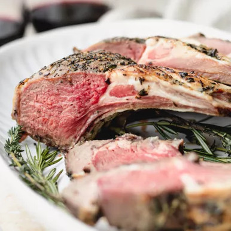

Classic Rack of Lamb recipe

Description
Rack of lamb is so elegant! Season rack of lamb with rosemary, thyme, and garlic, then slather with olive oil and roast in the oven. It’s the perfect recipe for entertaining and the holidays!
Ingredients
- 1 or more Frenched lamb rib racks with 7 to 8 ribs each (1 1/4 to 2 pounds for each rack)
- 2 teaspoons chopped fresh rosemary
- 1 teaspoon chopped fresh thyme
- 2 cloves garlic, minced
- Salt
- Freshly ground black pepper
- 2 tablespoons extra virgin olive oil
Steps
- Marinate the lamb: Rub rib rack(s) all over with mixture of rosemary, thyme, and garlic. Rub with salt and freshly ground black pepper. Place in a thick plastic bag with olive oil. Spread oil around so that it coats the lamb rack(s) all over. Squeeze out as much air as you can from the bag and seal. Place in a container to catch any leaks. Marinate in the refrigerator overnight, or at room temperature for 1 1/2 to 2 hours as the lamb is coming to room temperature in the next step.
- Bring lamb to room temp: Remove the lamb from the refrigerator 1 1/2 to 2 hours before you cook it so that it comes to room temp. If the meat is not at room temperature, it won't cook evenly and may still be raw inside while the outside is cooked.
- Preheat the oven to 450°F: Arrange the oven rack, so the lamb will be in the middle of the oven.
- Score the fat, sprinkle with salt and pepper, wrap bones in foil, place in pan fat side up: Score the fat, by making sharp shallow cuts through the fat, spaced about an inch apart. Rub the rack all over with more salt and pepper. Place the lamb rack bone side down (fat side up) on a roasting pan lined with foil. Wrap the exposed rib bones in a little foil so they don't burn.
- Roast at high heat to brown, then reduce heat to finish: Place the roast in the oven at 450°F for 10 minutes (longer if roasting more than one rack), or until the surface of the roast is nicely browned. Then, lower the heat to 300°F. Cook for 10 to 20 minutes longer (depending on the size of the lamb rack, if you are roasting more than one rack, and how rare or well done you want your lamb). A meat thermometer inserted into the thickest part of the meat should read 125°F for rare or 135°F for medium rare. Use a meat thermometer. Many factors can affect cooking time like the shape of the roast, the fat marbling, and your individual oven characteristics. This is too lovely and tender a roast to risk overcooking.
- Rest the roast 15 minutes before serving: Remove from oven, cover with foil, and let rest for 15 minutes. Cut lamb chops away from the rack by slicing between the bones. Serve 2-3 chops per person.